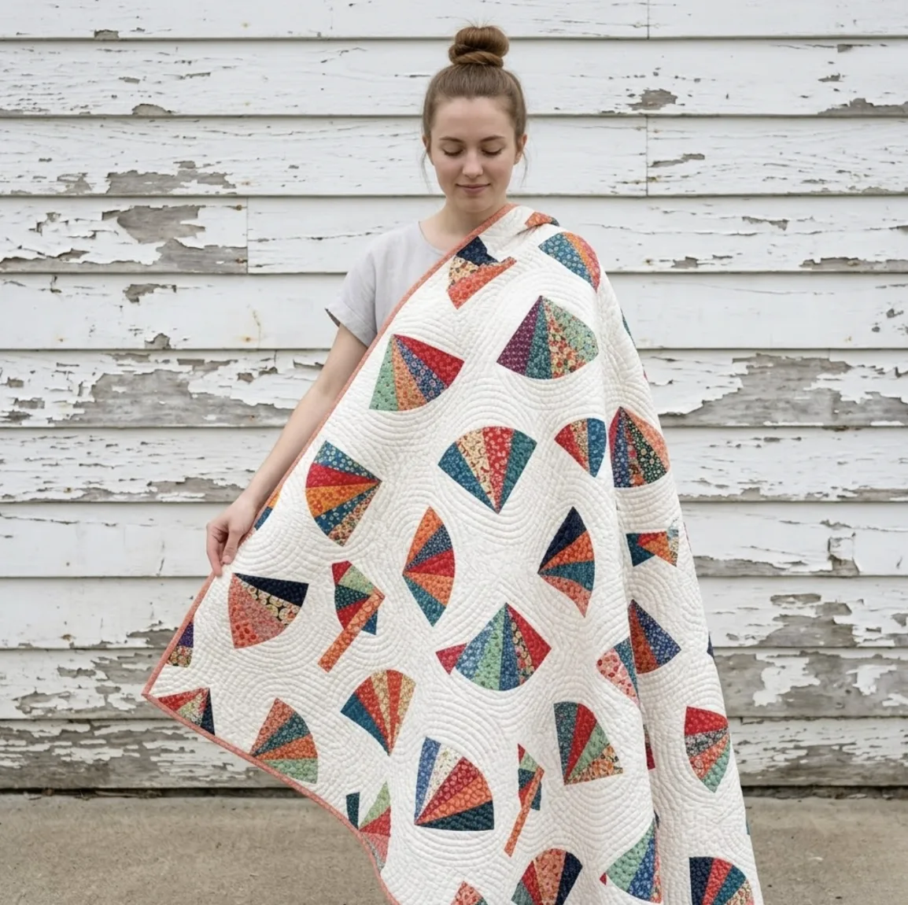
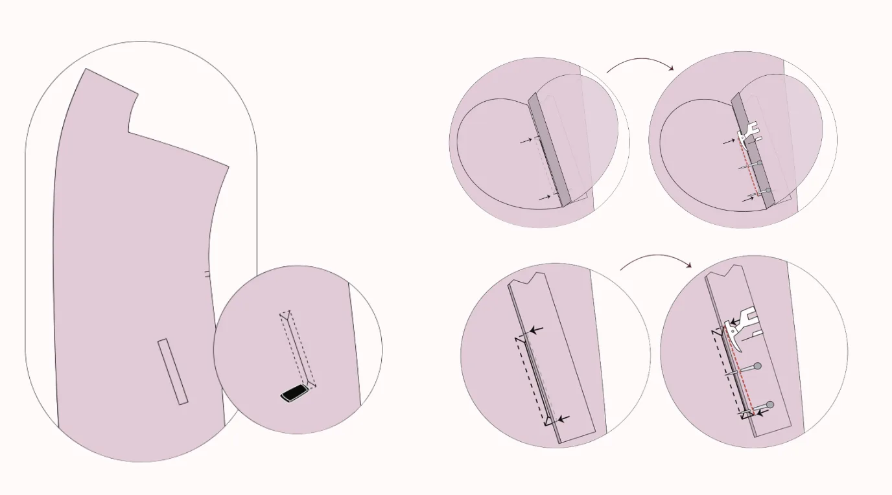
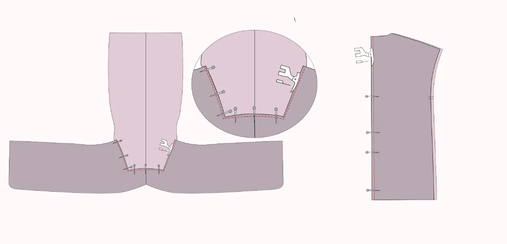
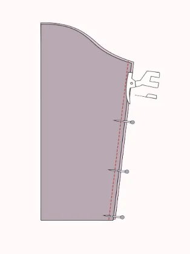
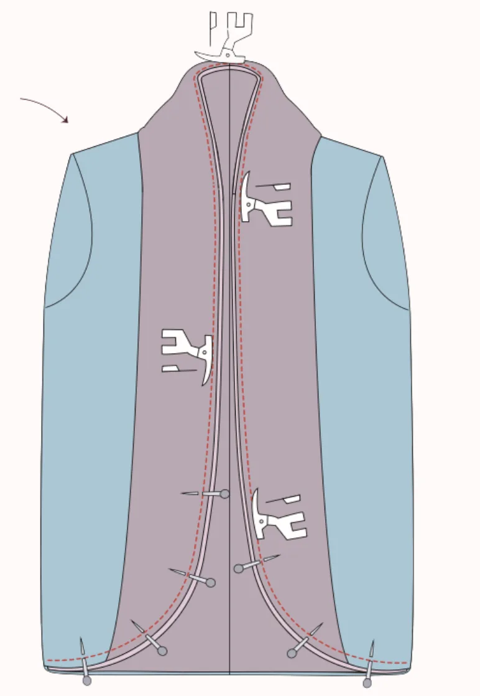
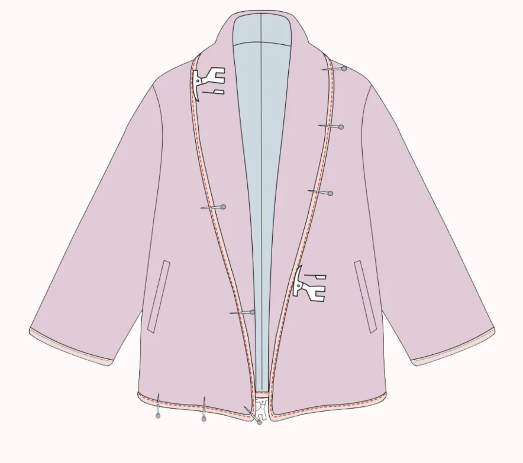
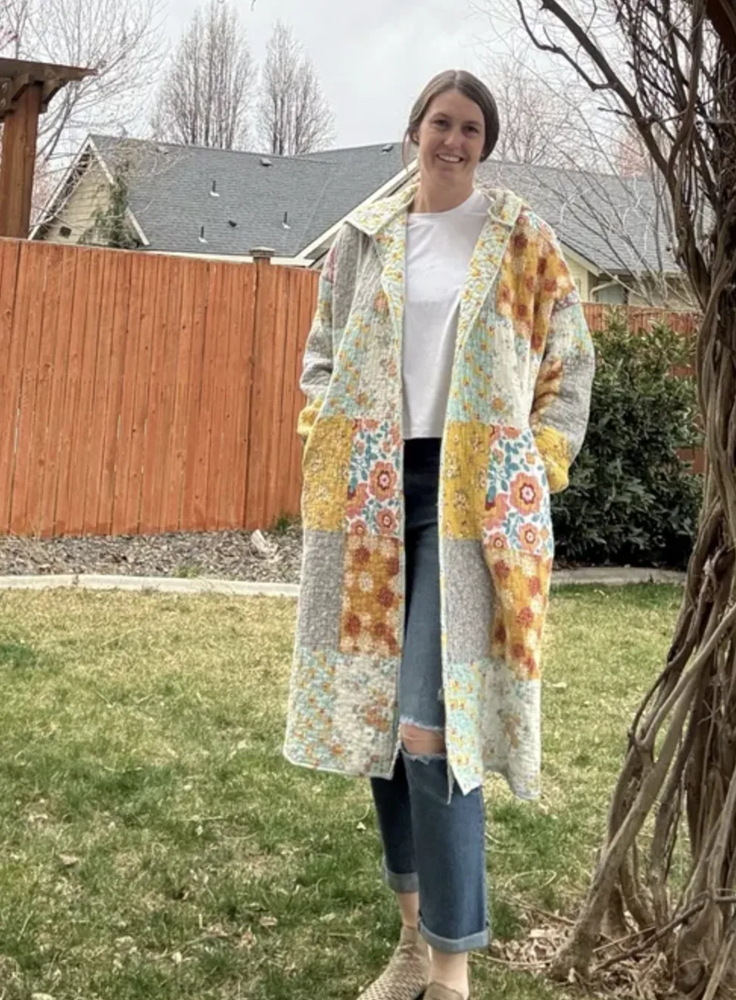
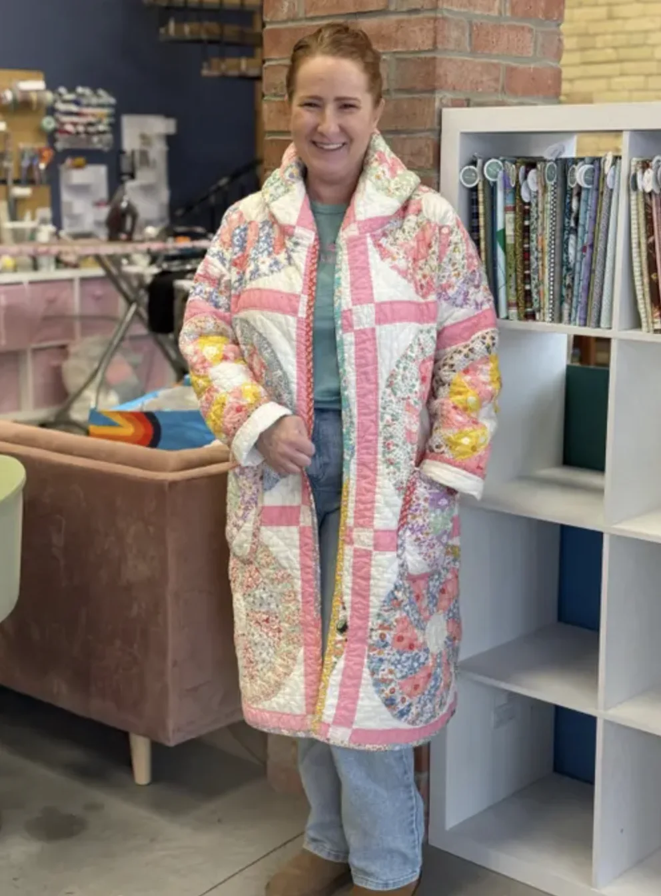
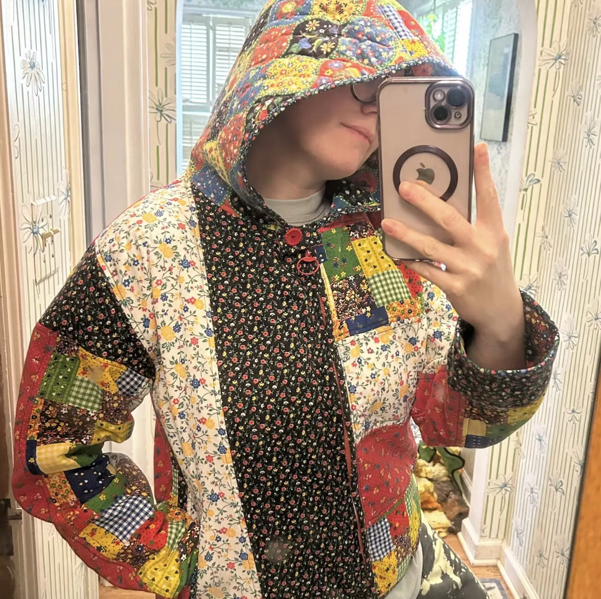

The Blossom Quilted Coat has the kind of silhouette that turns a good outfit into a great one. The draped shawl collar frames the neckline without fuss, the welt pockets sit exactly where your hands want to be, and the bias-bound edges give every finish a clean, deliberate look. Layer it over jeans, over knits, over everything in between — the quilted texture keeps it warm and structured without feeling stiff. This guide covers 8 key construction milestones; this guide covers 8 key construction milestones of this womens quilted coat sewing pattern — the full pattern includes every graded piece, an inclusive size chart from XXS to 5XL, and a 22-page illustrated instruction booklet covering all 19 steps of the construction process in precise, beginner-friendly detail.
1 Choosing Fabric for a Quilted Shawl Coat: Best Pre-Quilted Textiles
The Blossom Quilted Coat is designed for pre-quilted fabrics — materials where the quilting is already stitched in, so you get all the structure and warmth without any extra padding steps. The shawl collar drapes most beautifully in fabrics with a bit of body, and the welt pockets look cleanest in materials that hold their shape at the opening.
Pre-Quilted Nylon or Polyester is the go-to for a modern, sporty version of the coat. Lightweight, weather-resistant, and slightly glossy, it gives the Blossom a contemporary edge that works equally well for everyday errands and active-leaning layering. Pre-Quilted Cotton creates a soft, breathable, naturally textured coat — ideal for transitional seasons where you want warmth without weight, and the relaxed character of cotton suits the coat's open-front silhouette beautifully.
Pre-Quilted Denim brings structure and durability in equal measure, giving the coat a contemporary urban edge that pairs easily with casual or smart-casual outfits. For the most elevated version of this pattern, Pre-Quilted Wool or Wool Blends add warmth, elegance, and a refined finish that makes the Blossom Coat a proper outerwear piece suitable for both day and evening wear.

From everyday cotton to refined wool — choose the pre-quilted fabric that suits your season
2 How to Print a Quilted Coat PDF Sewing Pattern at Home
Before cutting any fabric, you need your pattern pieces printed and assembled. For this tutorial, we are using the LU2COHOUSE Blossom Quilted Coat Sewing Pattern — the exact pattern used to create the coat you see in this guide. Set your PDF software to "Actual size" with no scaling, print the first page alone, and verify the 2-inch test square with a ruler before printing all pages. This single step prevents the most common beginner mistake — printing at reduced scale without realising it.
Open the file in Adobe Acrobat Reader and use the Layers panel on the right-hand side to show only the sizes you need. The Blossom Coat pattern includes separate layers for every size from XXS to 5XL — deselecting unused sizes keeps your printed lines clean, easy to cut, and saves significant ink. Once all pages are printed, arrange them in the correct order and tape them together securely before cutting any pieces.

Set your printer to "Actual size" — then verify with the test square before printing all pages
3 How to Find Your Size in a Women's Coat Pattern XXS–5XL
Coat fit is determined by your body measurements — not your ready-to-wear size. Using a measuring tape, gently measure your bust, waist, and hips keeping the tape comfortably fitted, not pulled tight. Compare your measurements against the size chart included in the full pattern.
The Blossom Quilted Coat pattern covers inclusive sizes from XXS through 5XL. Because the coat has an open-front shawl silhouette with ease built in, if your measurements fall between two sizes choose the larger one — the extra room only enhances the relaxed, draped character of the finished coat.
Sewing this exact look along with us?
While this tutorial covers the major milestones, the perfect shawl coat is all in the details.
To get the exact proportions, the inclusive size chart, and the full Blossom instruction booklet — a 22-page PDF that walks you through all 19 construction steps in thorough, illustrated detail — you will need the LU2COHOUSE Blossom Quilted Coat Sewing Pattern. Available as an INSTANT DOWNLOAD, it includes formats for A4 and US Letter so you can print right at home, along with A0 for large-scale print shops, ensuring you can start cutting right away. The pattern also includes separate layers for every size and size measurements in both cm & inches.
Tools you will need
How to read the illustrations
4 How to Sew Welt Pockets on a Quilted Coat (Boon Pocket Method)
The boon pocket method produces a flush, clean opening with no visible stitching on the right side.
- Transfer and trace the pocket placement rectangle onto the front coat panel using tailor's chalk. Apply interfacing to the wrong side at the marked area for stability if desired.
- Prepare the boon piece: optionally apply interfacing to the wrong side, then place both pocket facing pieces right sides together, aligning the notches. Pin and sew three sides (both short edges and the top), leaving the bottom open. Trim allowances to 0.5 cm, clip corners, turn right side out, press, and baste along the bottom raw edge.
- Apply interfacing to the coat front at the full pocket opening area. Place the boon piece on the right side of the coat front, raw edge toward the rectangle line, notches matching. Pin and stitch along the marked rectangle.
- Place the lower pocket piece on top of the boon right sides together, aligning all markings. Pin and stitch along the outline, then fold the lower pocket edge over the seam and press.
- Place the upper pocket piece right sides together with the boon, slightly above the center line. Pin and stitch along the marked line, fold the edge toward the seam, and press.
- Cut down the center of the pocket opening, stopping 1 cm before each end, then clip diagonally into each corner to form small triangles — do not cut through the stitching.
- Pull both pocket pieces through to the wrong side and press the opening flat. Flip the boon so the open edge faces the side seam and edge stitch along the boon seam to secure it.
- Bring both pocket bag pieces together, stitch around the sides and bottom to close the bag, and finish the raw edges to prevent fraying.

5 Assembling the Coat Body: Collar, Facing, and Side Seams
- Join the front facing and front lining pieces: place right sides together, align center lines, pin, sew, and press the seam flat.
- Join the two back main fabric pieces: place right sides together along the center edge, pin, sew the center back seam, and press open. Repeat with the back lining pieces.
- Construct the shawl collar: pin the two front main fabric pieces together along the top collar edges right sides facing, and stitch. Repeat with the lining and facing pieces.
- Attach the collar to the back neckline: open out the front panel collar and pin the back neckline to the top edge, matching the center back. Pin shoulder seams together and stitch from one shoulder across the neckline to the other. Repeat with lining and facing pieces.
- Join the coat body: place front and back pieces right sides together, pin along the side seams only (not the collar — this coat uses a draped shawl collar, not a sewn-in neckband). Stitch with a 1 cm seam allowance, finish raw edges, and press open. Repeat with lining pieces.

6 Setting In Sleeves on a Shawl Collar Coat
The Blossom Quilted Coat features set-in sleeves — a clean, structured construction that gives the coat its polished, tailored shoulder line.
- Fold the sleeve piece in half lengthwise with right sides facing each other, pin the aligned edges, and sew along the pinned edge to form the sleeve seam.
- Press the seam open or to one side and overlock the raw edges for a neat finish.
- Repeat the same process with the sleeve lining piece so both the outer sleeve and lining sleeve are fully assembled.
- Place the right side of the sleeve against the right side of the bodice armhole. Align the side seam of the sleeve with the side seam of the armhole and match all notches carefully.
- Pin the rest of the sleeve along the armhole edge, distributing any ease smoothly and evenly so the sleeve cap sits without puckers or tucks.
- Sew around the armhole to attach the sleeve, then finish the seam using your preferred method — overlocking adds durability and prevents fraying — and press neatly with an iron.
- Repeat the entire process to set in the sleeve lining.

7 How to Line a Quilted Coat Using the Sandwich Method
Lining the Blossom Quilted Coat uses the sandwich method — the cleanest technique for enclosing all raw edges between the outer fabric and lining without any hand-stitching.
- Place the lining panel on top of the main fabric panel with right sides together and align all edges carefully.
- Ensure the collar, sleeves, and bottom edges are properly aligned, and that the center back and front points match accurately.
- For beginners: begin pinning from the back neckline to the front collar, continuing down along the front and to the bottom — leave the back hem open to make it easier to turn the coat right side out.
- For experienced sewers: pin from the back neckline all the way around — down the front, along the collar, and all the way to the back — leaving either a sleeve opening or one side open for turning the fabric later.
- Sew along all pinned edges, then trim and finish the seams as needed.
- Neatly fold the shawl collar to shape it, and press carefully to set the drape, achieving a smooth, professional finish on the right side.

8 Finishing a Quilted Coat with Bias Binding: Wrists, Front Opening and Hem
Bias binding is the finishing technique that gives the Blossom Quilted Coat its signature edge — wrapping the wrist hems, front opening, collar, and hemline in a neat, continuous band that is both decorative and structural.
- Align the wrist edges of the lining and main fabric right sides together, ensuring they are perfectly aligned, and secure with pins. Overlock the seam for added durability if desired, then turn the coat inside out to prepare for attaching the bias band.
- Measure the wrist hem circumference and cut a piece of bias band to match. Open one folded edge of the bias band, align its raw edge with the raw edge of the wrist hem right sides together, and pin neatly around the wrist.
- Stitch along the crease of the opened bias band to secure it. Fold the bias band over to the inside so it completely covers the raw edge, pin smoothly and evenly, then topstitch close to the folded edge ensuring both layers are caught. Press for a clean, crisp finish.
- Repeat steps 2–3 for the second wrist hem.
- For the front opening, collar, and hemline: measure the full continuous length from the bottom hem, up one front, around the collar edge, and back down the other front to the opposite hem. Cut a single piece of bias band to this measurement plus a little extra.
- Open one folded edge and align it with the raw edges of the coat's collar, front opening, and hemline. Pin or clip all the way around, then sew along the crease of the opened bias band to secure it.
- Fold the band over the raw edges to encase them completely, pin in place, and topstitch close to the folded edge. Press the entire bias-bound edge for a smooth, polished, professional finish.

Ready to Sew Your Own Quilted Shawl Coat?
A shawl coat you made yourself sits differently on your shoulders — the welt pockets, the bias-bound edges, the collar that falls just right — you know every stitch that got it there.
This guide covers the key milestones — the full Blossom Quilted Coat pattern takes you all the way through. The instruction booklet alone is 22 pages, covering all 19 construction steps in step-by-step illustrated detail so nothing is left to guesswork. Download today and start cutting.
What you will receive with the Blossom Quilted Coat Pattern:
- PDF sewing pattern — sizes XXS through 5XL
- US Letter printable pattern for home printers
- A4 printable pattern
- A0 printable pattern for large-scale print shops
- Separate layers for every size — easy to print only your size
- Size measurements in both cm & inches
- The complete 22-page instruction booklet — all 19 steps, illustrated in detail
- Instant digital access — no waiting!

[ Made by our community ]
What Sewers Made with our sewing Patterns




Want to explore more womens quilted coat and jacket patterns? We have a massive collection of beginner-friendly clothing patterns tailored for every style!
[ Related Guides ]

Terms of Use: All digital patterns, tutorials, and designs are for personal use only. Unauthorized commercial reproduction or distribution of any pattern or resulting garments is strictly prohibited to protect original designs.